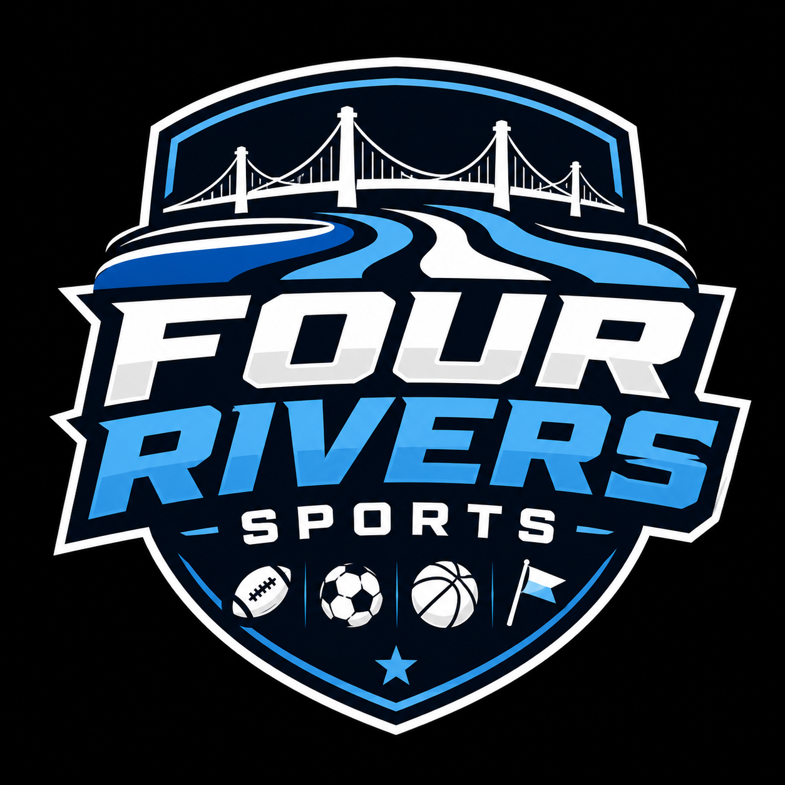

Community
Everything starts with the local community. Paducah families deserve youth sports experiences that feel accessible, encouraging, and well-run.

4 Rivers Sports Youth leagues, clinics, and campsAbout 4 Rivers Sports
4 Rivers Sports is focused on giving local families organized, welcoming, and growth-centered sports experiences.
Everything starts with the local community. Paducah families deserve youth sports experiences that feel accessible, encouraging, and well-run.
Programs are built to develop confidence, teamwork, discipline, and a love of learning through sport, not just results on a scoreboard.
Families need structure, communication, and consistency. That is why every clinic, camp, and league is designed to feel dependable from the start.
4 Rivers Sports is creating opportunities for a wide range of athletes, with programming that welcomes both boys and girls.
For Paducah Families
That mission drives the launch of the flag football clinic, girls' summer league, and future MLS GO soccer programming.